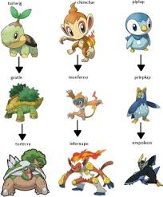

O que é Pokémon:
Pokémon é uma franquia de mídia que começou como um jogo de videogame lançado pela Nintendo em 1996 para o console Game Boy. Criada por Satoshi Tajiri e Ken Sugimori, a franquia Pokémon se expandiu para incluir uma série de jogos, desenhos animados, filmes, mangás, brinquedos e uma infinidade de outros produtos. O conceito central de Pokémon gira em torno de treinadores capturando criaturas fictícias chamadas "Pokémon" e treinando-as para lutarem entre si. Cada Pokémon tem habilidades únicas e pertence a um ou mais "tipos" (como fogo, água, elétrico, etc.), que influenciam suas habilidades e fraquezas em batalha. Os treinadores viajam pelo mundo, desafiando outros treinadores e líderes de ginásio, enquanto buscam se tornar o melhor treinador Pokémon, geralmente objetivo central dos jogos. Ao longo dos anos, a franquia Pokémon se tornou uma das mais bem-sucedidas e reconhecidas internacionalmente, com uma grande base de fãs globalmente.
Como funciona a evolução e a progressão em Pokémon:
A progressão em Pokémon geralmente ocorre de várias maneiras, dependendo do meio em que você está jogando ou assistindo, mas os principais elementos de progressão são encontrados nos jogos de videogame. Aqui está uma visão geral de como funciona a progressão nos jogos Pokémon:
- Captura de Pokémon: Os jogadores começam capturando Pokémon selvagens usando Pokébolas. Quanto mais Pokémon eles capturam, mais opções eles têm para montar sua equipe.
- Treinamento de Pokémon: Os jogadores treinam seus Pokémon derrotando outros treinadores em batalhas ou enfrentando Pokémon selvagens. Isso faz com que seus Pokémon ganhem experiência, o que os faz subir de nível e, eventualmente, evoluir para formas mais fortes.
- Ginásios Pokémon: Em muitos jogos principais da série, os jogadores enfrentam líderes de ginásio em cidades específicas. Ao derrotar esses líderes, os jogadores ganham insígnias que provam sua habilidade como treinadores. Isso muitas vezes desbloqueia novas áreas do jogo. 
- Liga Pokémon ou Elite Four: O objetivo final é desafiar a Liga Pokémon ou a Elite Four, uma série de batalhas contra os melhores treinadores da região. Ao vencer esses desafios, os jogadores se tornam o campeão da Liga Pokémon.
- Pós-jogo: Muitos jogos têm conteúdo pós-jogo, onde os jogadores podem continuar a treinar e aprimorar suas equipes, enfrentar desafios adicionais e completar a Pokédex, que é uma enciclopédia virtual de todos os Pokémon disponíveis no jogo.
Em resumo, a progressão em Pokémon envolve capturar, treinar e batalhar com Pokémon para fortalecer sua equipe e enfrentar desafios cada vez maiores até se tornarem o campeão da região.
A história de Pokémon
O anime Pokémon segue as aventuras de um jovem treinador chamado Ash Ketchum (Satoshi no original japonês) e seu parceiro Pokémon, inicialmente um Pikachu. A história começa quando Ash completa 10 anos e embarca em uma jornada para se tornar um Mestre Pokémon. Ao longo do caminho, ele faz amizade com outros treinadores, como Misty e Brock, e captura novos Pokémon para sua equipe. O principal objetivo de Ash é ganhar distintivos de ginásio em diferentes cidades para se qualificar para a Liga Pokémon. Ele enfrenta líderes de ginásio e rivais, como o persistente Gary Oak, enquanto luta para se tornar um treinador mais forte. Durante sua jornada, Ash é constantemente desafiado pela Equipe Rocket, composta por Jessie, James e seu Meowth falante, que estão sempre tentando roubar Pokémon de treinadores desprevenidos, incluindo o próprio Pikachu de Ash. Ao longo das temporadas, Ash participa de várias ligas Pokémon regionais, como a Liga de Kanto, Johto, Hoenn, Sinnoh, Unova, Kalos, Alola e Galar. Ele faz amigos, enfrenta desafios e se esforça para se tornar um verdadeiro Mestre Pokémon. Além disso, o anime apresenta eventos especiais, como encontros com lendários Pokémon, batalhas épicas contra vilões poderosos e momentos emocionantes de desenvolvimento pessoal para Ash e seus amigos. O anime Pokémon é conhecido por sua longevidade e sua capacidade de atrair fãs de todas as idades, cativando gerações com suas aventuras emocionantes e mensagens positivas sobre amizade, trabalho em equipe e perseverança
A história dos jogos de Pokémon
Os jogos de Pokémon têm uma história fascinante que começou em 1996, quando a Nintendo lançou os primeiros jogos da franquia para o Game Boy no Japão. Os jogos foram Pokémon Red e Green (mais tarde lançados em outros países como Red e Blue), criados por Satoshi Tajiri e Ken Sugimori, da Game Freak. A história dos jogos se passa em um mundo fictício onde os humanos, conhecidos como treinadores de Pokémon, capturam e treinam criaturas chamadas Pokémon para batalhar entre si. O objetivo principal dos jogos é se tornar o melhor treinador de Pokémon, derrotando outros treinadores e colecionando o maior número possível de Pokémon. O sucesso inicial dos jogos foi enorme, levando a uma série de continuações e spin-offs ao longo dos anos. Além dos jogos principais da série, houve uma série de filmes, programas de TV, brinquedos e outros produtos relacionados. Ao longo das décadas, os jogos de Pokémon foram evoluindo em termos de gráficos, mecânicas de jogo e número de Pokémon disponíveis. Novas gerações de jogos foram introduzidas regularmente, apresentando novas regiões, personagens e Pokémon para os jogadores descobrirem. Além dos jogos principais da série, houve uma variedade de spin-offs, incluindo jogos de quebra-cabeça, jogos de cartas, jogos de luta e até mesmo aplicativos móveis, todos ambientados no universo de Pokémon. Os jogos de Pokémon não apenas moldaram a cultura dos jogos eletrônicos, mas também se tornaram uma parte fundamental da cultura pop em geral, capturando os corações de milhões de fãs em todo o mundo e criando uma comunidade global apaixonada e vibrante.